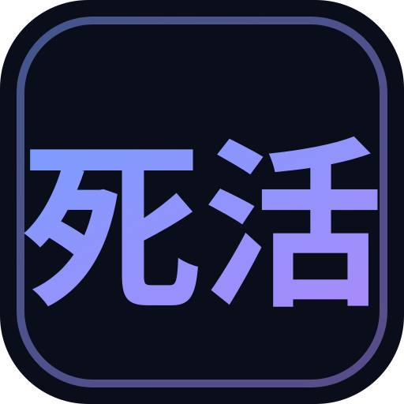
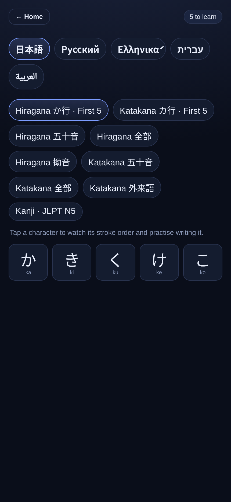
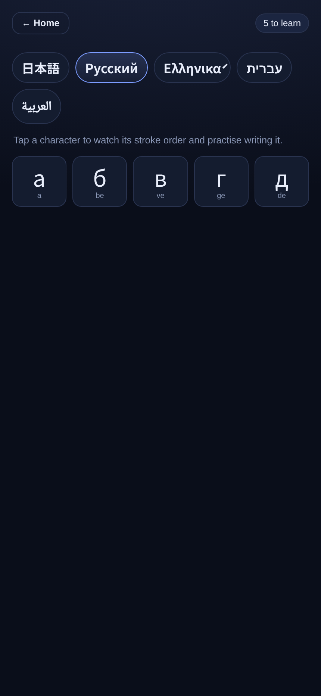
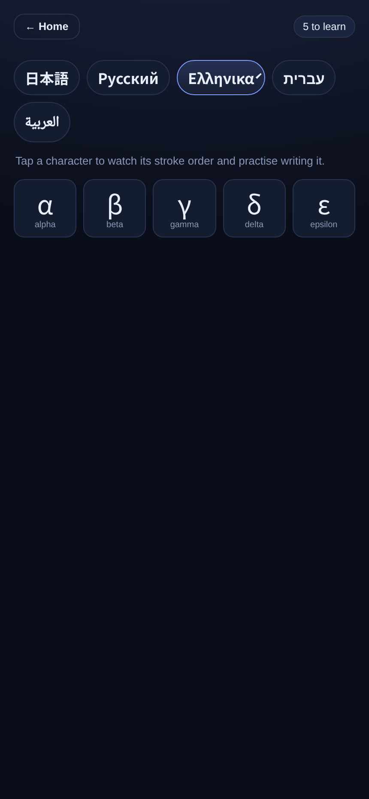
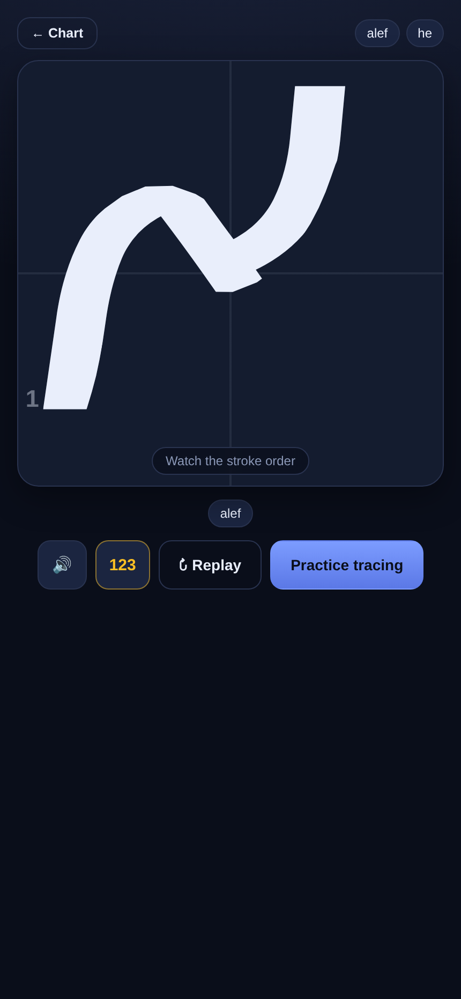
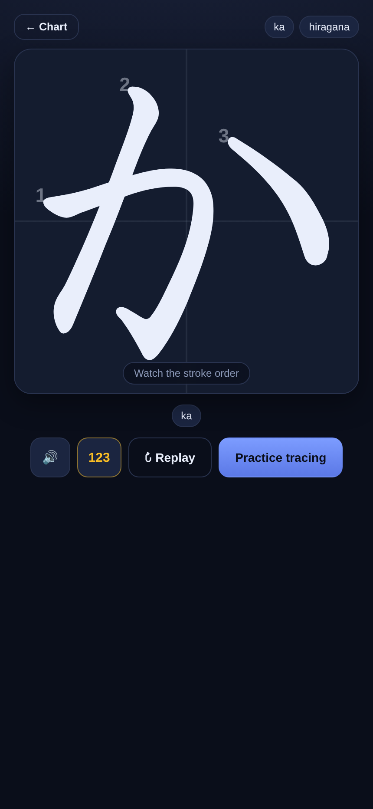
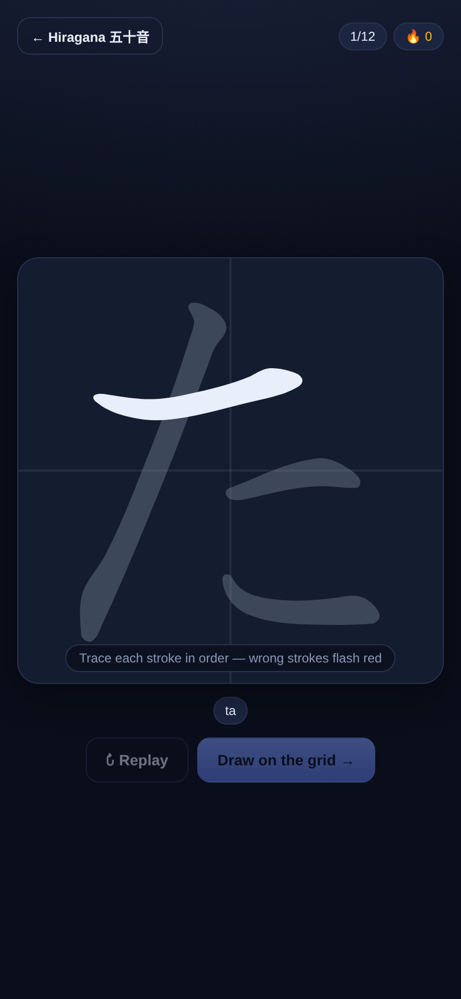
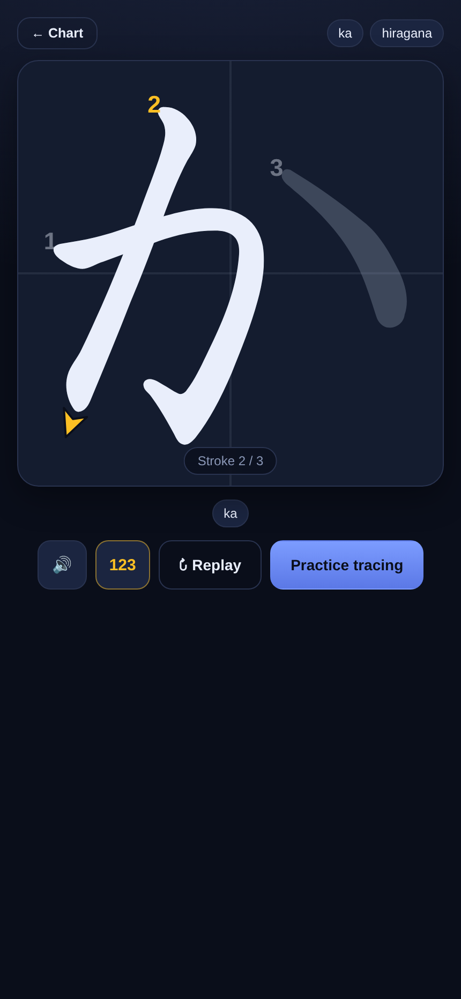
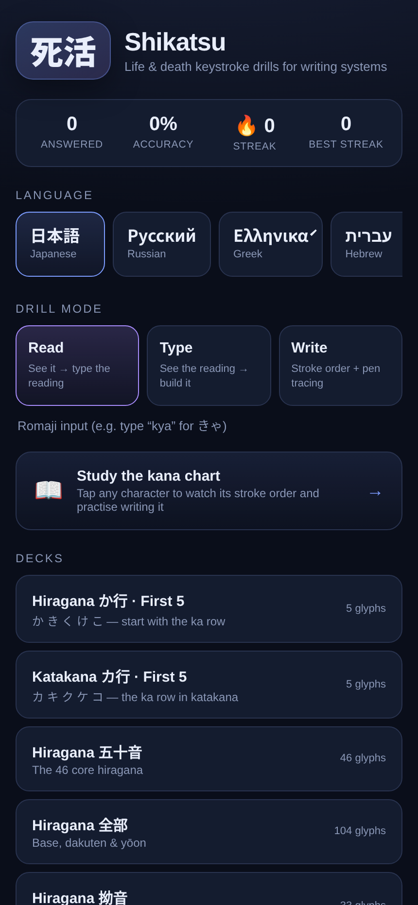

死活
Learn to write Japanese kana. Watch each stroke drawn in order, trace it with a pen or your finger, and Shikatsu checks every stroke as you go.
Playable now · Free · Works offline
Most apps flash a card and ask you to pick the meaning. Shikatsu teaches what you need to write by hand: the order, direction and shape of every stroke. Browse the kana chart and tap any character to hear it, watch it, and write it.
Each stroke animates on in order, numbered, with an arrow showing which way the pen travels. The finished character sits faintly behind as a guide.
Draw on the grid with a stylus or your finger. Shikatsu checks each stroke against the real thing, marks a wrong one in red, and hints the next if you get stuck.
Drills come round more often for the characters you keep missing. Streaks and accuracy are tracked on your device.
The character draws itself stroke by stroke, the way a teacher would write it.
Draw it yourself. Every stroke is graded in order, so you cannot learn it backwards.
Typing and reading drills tie the sound, the kana and the keystrokes together.
Stroke order, direction arrows and guided tracing with a pen or finger.
See the reading, build the kana. Shikatsu converts as you type, so "kya" becomes きゃ and you pick up the keystrokes by doing.
See a kana, type its romaji. A quick keyboard drill for recognition and speed.








| A typical kana app | Shikatsu | |
|---|---|---|
| Price | Ads, or a subscription | Free |
| Ads and tracking | Common | None |
| Stroke order | Sometimes a static diagram | Animated, with arrows |
| Handwriting check | Rare, or behind a paywall | Every stroke, in order |
| Works offline | Varies | Installable app |
| Your data | Often an account | Stays on your device |
Shikatsu starts with the full hiragana and katakana sets, including dakuten and yōon, plus the 103 JLPT N5 kanji. The same engine covers other writing systems, so Cyrillic, Greek, Hebrew and Arabic are playable too — the drills, tracing and scoring stay the same.
Yes. No ads, no subscription and no account.
No. The typing drills work with the on-screen romaji keyboard, or a physical one, and convert what you type into kana, so you learn the keystrokes without setting up an IME.
Yes. Shikatsu is an installable web app. Add it to your home screen and it keeps working with no connection; the stroke data ships with it.
Yes. It uses standard pointer input, so an Apple Pencil, an S Pen or any stylus works, as does a finger.
Each character ships with its real strokes and stroke centre-lines, from the open KanjiVG and animCJK data. As you draw, Shikatsu matches your stroke against the expected one and grades it in order.
死活 (shikatsu) is a term from the game of Go, meaning "life and death". Here it means learning a writing system well enough that it becomes second nature.
Shikatsu runs entirely in your browser. There is no account and no analytics, and nothing is sent anywhere: your practice stays on your device. Stroke data comes from the open KanjiVG and animCJK projects; animation and recognition use the open-source Hanzi Writer.